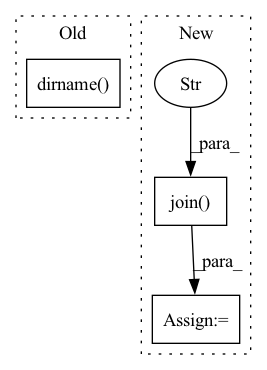

Pattern ID :28631

Before Change
// Parallel OOC
if WITH_CUDA:
ooc_ext_dir = osp.join(
osp.dirname(osp.abspath(__file__)), "falkon", "ooc_ops", "multigpu")
ooc_files = ["multigpu_potrf_bind.cpp", "cuda/multigpu_potrf.cu"]
ooc_macros = [("WITH_CUDA", None)]
nvcc_flags = os.getenv("NVCC_FLAGS", "")
After Change
// Parallel OOC
if WITH_CUDA:
ooc_ext_dir = osp.join(CURRENT_DIR, "falkon", "ooc_ops", "multigpu")
ooc_files = ["multigpu_potrf_bind.cpp", "cuda/multigpu_potrf.cu"]
ooc_macros = [("WITH_CUDA", None)]
nvcc_flags = os.getenv("NVCC_FLAGS", "")
nvcc_flags = [] if nvcc_flags == "" else nvcc_flags.split(" ")
In pattern: SUPERPATTERN
Frequency: 3
Non-data size: 3
Instances
Fragment ID: 84534009
Project Name: falkonml/falkon
Commit Name: d86629343df56a690bbc65643656a278f62e739b
Time: 2020-06-23
Author: giacomo.meanti@gmail.com
File Name: setup.py
M Class Name: AnonimousClass
N Class Name: AnonimousClass
M Method Name: get_extensions(0)
N Method Name: get_extensions(0)
M Parent Class:
N Parent Class:
M File Name: setup.py
N File Name: setup.py
M Start Line: 33
M End Line: 60
N Start Line: 35
N End Line: 65
'>
Before Change
f = Flow().load_config("flow-index.yml")
with f:
data_path = os.path.join(os.path.dirname(__file__), os.environ.get("JINA_DATA_FILE", None))
print(f"Indexing {data_path}")
url = f"http://0.0.0.0:{f.port_expose}/index"
After Change
data_dir = os.path.join(dataset_name, os.environ["JINA_TMP_DATA_DIR"])
with f:
data_path = os.path.join(data_dir, f"{dataset_name}_base.fvecs")
print(f"Indexing {data_path}")
url = f"http://0.0.0.0:{f.port_expose}/index"
'>
Fragment ID: 84534011
Project Name: jina-ai/examples
Commit Name: bb48f1c44f1700d78478aca848303625015dcc1b
Time: 2021-04-26
Author: rutuja.r.surve@gmail.com
File Name: advanced-vector-search/app.py
M Class Name: AnonimousClass
N Class Name: AnonimousClass
M Method Name: index_restful(1)
N Method Name: index_restful(1)
M Parent Class:
N Parent Class:
M File Name: advanced-vector-search/app.py
N File Name: advanced-vector-search/app.py
M Start Line: 73
M End Line: 73
N Start Line: 73
N End Line: 77
'>
Before Change
if config.inspection.update_las:
points_gdf = update_las_with_decisions(points_gdf, gdf_inspection)
out_dir = osp.dirname(config.inspection.comparison_shapefile_path)
out_name = osp.basename(las_filepath)
out_path = osp.join(out_dir, "las", out_name)
points_gdf.write(out_path)
After Change
las.classification = reset_classification(las.classification)
points_gdf = update_las_with_decisions(las, gdf_inspection)
out_dir = osp.dirname(inspection_shp_unsure_path)
out_dir = osp.join(out_dir, "las")
os.makedirs(out_dir, exist_ok=True)
out_name = osp.basename(las_filepath)
out_path = osp.join(out_dir, out_name)
points_gdf.write(out_path)
'>
Fragment ID: 84534013
Project Name: ignf/lidar-deep-segmentation
Commit Name: e09dda5dd78a1806f2ed4e1f9f27667e344b3f6b
Time: 2021-11-04
Author: charles.gaydon@gmail.com
File Name: semantic_val/decide.py
M Class Name: AnonimousClass
N Class Name: AnonimousClass
M Method Name: decide(1)
N Method Name: decide(1)
M Parent Class:
N Parent Class:
M File Name: semantic_val/decide.py
N File Name: semantic_val/decide.py
M Start Line: 38
M End Line: 87
N Start Line: 42
N End Line: 99